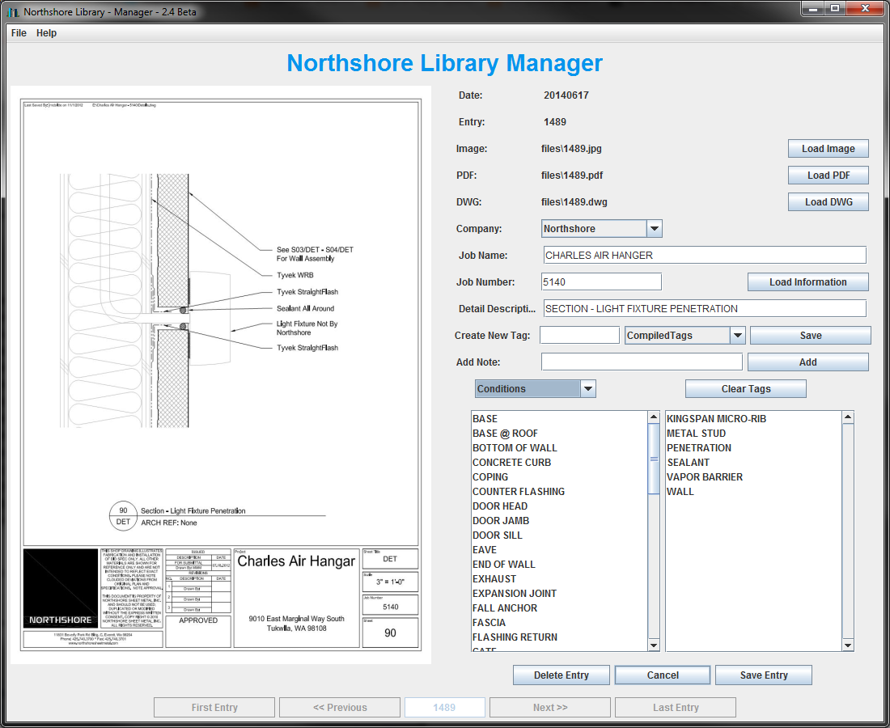
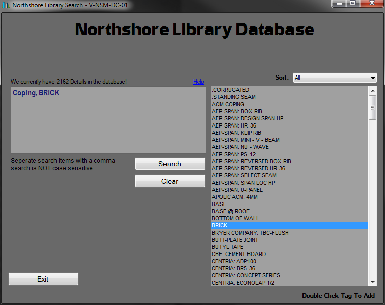
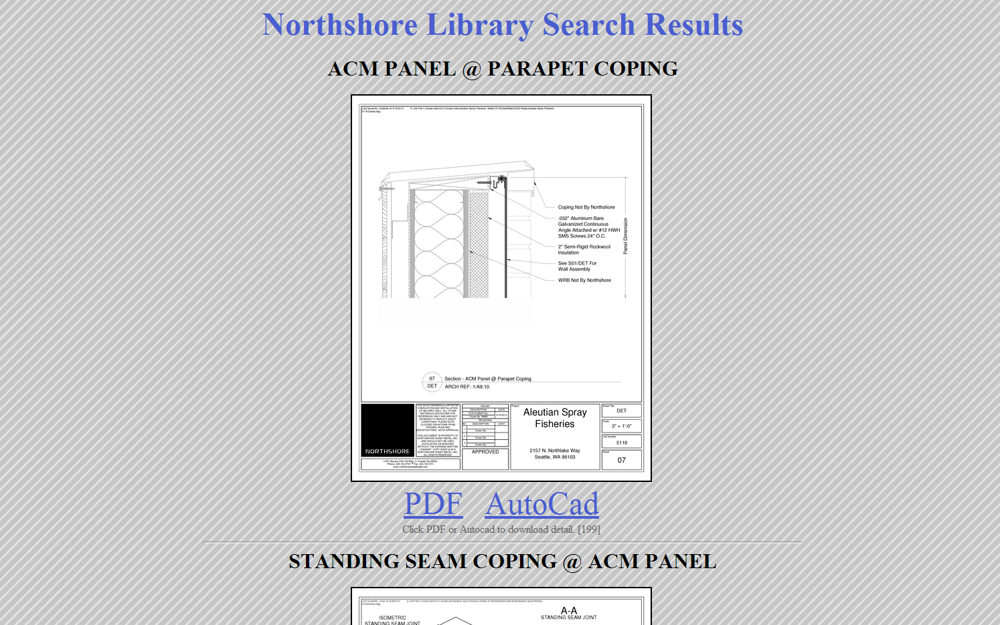

Description
Northshore Library is a database and archive of technical Autocad drawings and job information.
Northshore Library logs drawings accompanied with tags that describe job information, and drawing attributes.
Northshore Library is made of many programs and several languages (Java, python, VB.net, HTML) to provide the user with interfaces for searching and viewing results. Northshore Library also provides a backend for management that allows database management, directory managment, searching, importing and exporting.
This project is alive and booming, with over 2,000 drawings and counting. I plan on moving the database to the web within the year, supporting PC, Mobile access, and registered users for proprietary privacy.
Images


